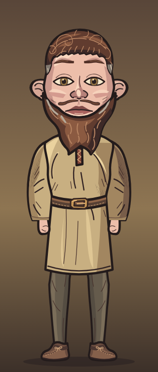
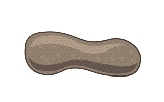
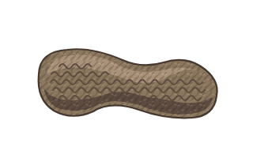

<!doctype html><html lang="ru"><meta charset="utf-8"><meta name="viewport" content="width=device-width,initial-scale=1"><title>Стелька · материал</title><style>body{font:16px system-ui;background:#25201b;color:#eee2cd;margin:0 auto;max-width:1280px;padding:1rem}
    a{color:#f4ca91}h1,h2{font:700 1.7rem Georgia,serif}nav ul{columns:3}.grid{display:grid;gap:1rem;
    grid-template-columns:repeat(auto-fit,minmax(230px,1fr))}article{min-width:0;border:1px solid #655343;
    background:#312821;padding:.6rem;border-radius:5px}a img{vertical-align:middle}img{max-width:100%;height:auto}
    .character{display:block;max-height:460px;width:auto;margin:auto}.card{width:32px;height:32px}
    .detail{display:block;width:100%;margin:.35rem 0}.compare{display:flex;align-items:flex-start;gap:.5rem}
    .compare a{flex:1;min-width:0}small{color:#dccab0}code{overflow-wrap:anywhere}@media(max-width:730px){nav ul{columns:1}}</style><main><nav><a href="index.html">Все разделы</a></nav><h1>Стелька · материал</h1><div class="grid"><article id="material__insole_material__felt_insole__felt"><h3>Войлок</h3><code>felt</code><a href="images/0819ce2ebd16ce753dafa9b64bce4dd40a6eb8e4fddb76a135f65eab6856057c.png"></a><p><a href="images/0fd67aac2f48c71423743f28d2dbe07b7ae389401da34d611f9cff28e50207ed.png"></a> <small>32 × 32</small></p><a href="images/7ac1fa4a07db6b8d31b56a2ea616b8394c26e349b4d356c67cc83c5fa7ecfa96.png"></a><details><summary>До и после</summary><div class="compare"><span>До<a href="images/8b7f188e9d9236f19aa946ab009b6f517cc8e6efc30091aca2c334ace7d46116.png"></a></span><span>После<a href="images/7ac1fa4a07db6b8d31b56a2ea616b8394c26e349b4d356c67cc83c5fa7ecfa96.png"></a></span></div></details></article>
<article id="material__insole_material__needlebound_insole__wool"><h3>Шерсть</h3><code>wool</code><a href="images/0819ce2ebd16ce753dafa9b64bce4dd40a6eb8e4fddb76a135f65eab6856057c.png"></a><p><a href="images/0fd67aac2f48c71423743f28d2dbe07b7ae389401da34d611f9cff28e50207ed.png"></a> <small>32 × 32</small></p><a href="images/380ab3b9f7ecd250d7ae111b4ceca65d9182990180ad8288a9f7ad914f1920ca.png"></a><details><summary>До и после</summary><div class="compare"><span>До<a href="images/4c17ad55ca71f7f17b51b70fcd0e3cd88d342e8e24bfca72f3214ff3ec4f7427.png"></a></span><span>После<a href="images/380ab3b9f7ecd250d7ae111b4ceca65d9182990180ad8288a9f7ad914f1920ca.png"></a></span></div></details></article>
<article id="material__insole_material__needlebound_insole__coarse_wool"><h3>Грубая шерсть</h3><code>coarse_wool</code><a href="images/0819ce2ebd16ce753dafa9b64bce4dd40a6eb8e4fddb76a135f65eab6856057c.png"></a><p><a href="images/0fd67aac2f48c71423743f28d2dbe07b7ae389401da34d611f9cff28e50207ed.png"></a> <small>32 × 32</small></p><a href="images/6ffa56eb62619625a83a089d1b23d36eb4c3b7097ebb94abef7b95dd1feb4c36.png"></a><details><summary>До и после</summary><div class="compare"><span>До<a href="images/6a7bdd83600da35f43684f817642b7a16a02e98506c14bba3b81a3047cc90bc0.png"></a></span><span>После<a href="images/6ffa56eb62619625a83a089d1b23d36eb4c3b7097ebb94abef7b95dd1feb4c36.png"></a></span></div></details></article>
<article id="material__insole_material__needlebound_insole__fine_wool"><h3>Тонкая шерсть</h3><code>fine_wool</code><a href="images/0819ce2ebd16ce753dafa9b64bce4dd40a6eb8e4fddb76a135f65eab6856057c.png"></a><p><a href="images/0fd67aac2f48c71423743f28d2dbe07b7ae389401da34d611f9cff28e50207ed.png"></a> <small>32 × 32</small></p><a href="images/7543295c463ea07d2cfc98c930fefe6971729c026687a7e916beeae52d031357.png"></a><details><summary>До и после</summary><div class="compare"><span>До<a href="images/6859ede8c8f380453f6ee2ea7cf64b8fbbc100d84a2d08c6326f25316ca207a5.png"></a></span><span>После<a href="images/7543295c463ea07d2cfc98c930fefe6971729c026687a7e916beeae52d031357.png"></a></span></div></details></article>
<article id="material__insole_material__auto"><h3>По фасону</h3><code>auto</code><a href="images/0819ce2ebd16ce753dafa9b64bce4dd40a6eb8e4fddb76a135f65eab6856057c.png"></a><p><a href="images/0fd67aac2f48c71423743f28d2dbe07b7ae389401da34d611f9cff28e50207ed.png"></a> <small>32 × 32</small></p></article></div></main></html>
